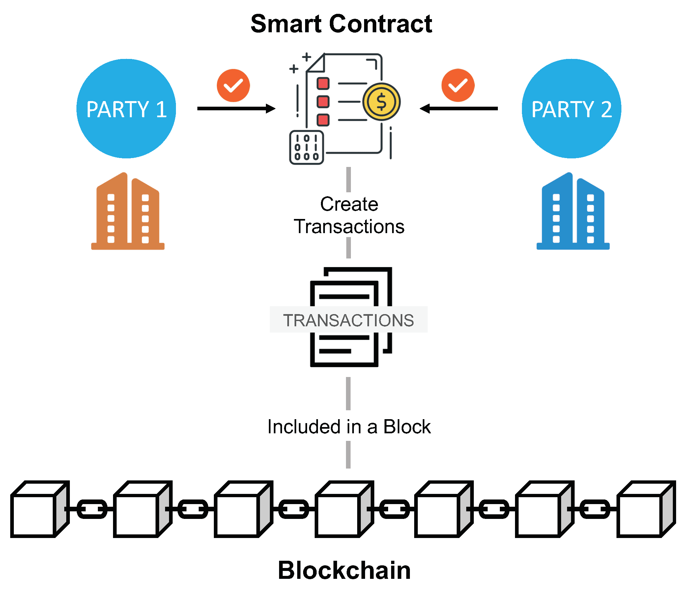
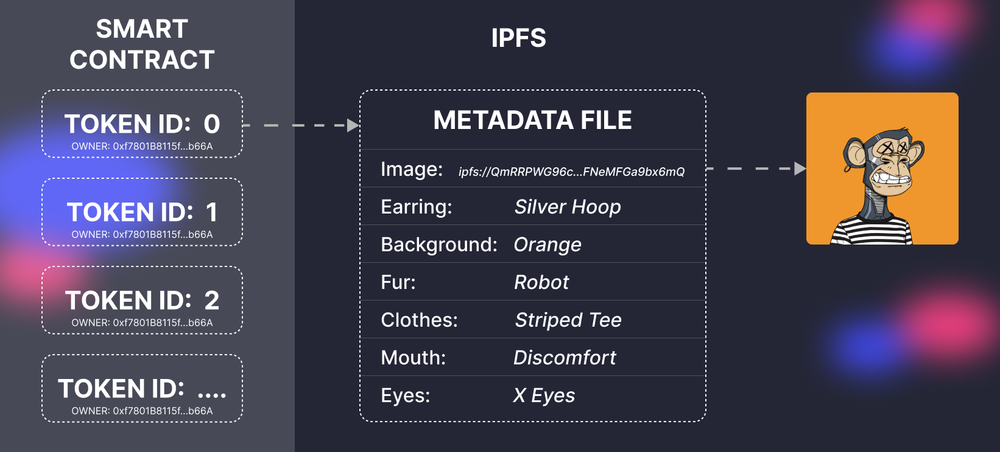
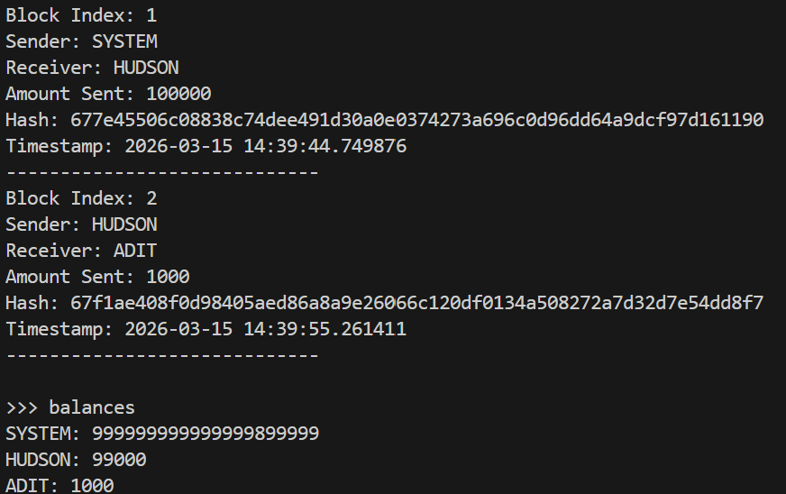
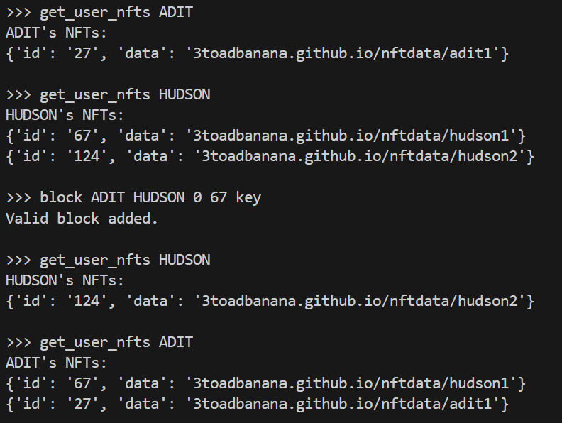
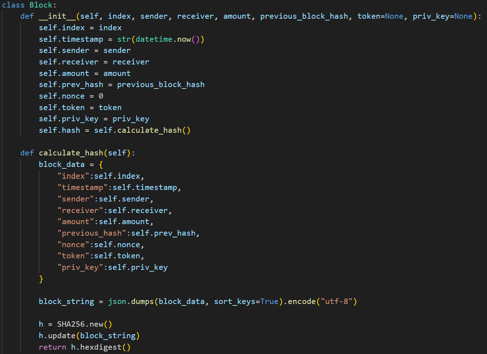

For this deliverable, Adit and I implemented a basic blockchain to demonstrate how NFTs work. NFTs are non-fungible tokens, and in brief, are unique,
one of a kind tokens that are often used to represent ownership or authenticity of an asset, usually digital. NFTs are enabled by blockchain technology, which
is essentially a digital ledger that stores a full record of public transactions, allowing for a decentralized system that can operate without trust, making it
perfect for trading digital assets like NFTs. NFTs are traded with cryptocurrency, so we created a naive blockchain for a fictional cryptocurrency called "T3 coin"
that allowed us to mint and trade NFTS with eachother (or any other users in the system).
Access our github repo here.
Since we were tasked to look at NFTs through a metaphysics lens, we specifically looked at the question of the ship of Theseus, and compared them to dNFTs (dynamic NFTS).
dNFTs can change based on outside factors, based upon the pre-set achievements that are written into their smart contracts. While the visual art that represents the NFT
changes, the token itself remains the same. Even though the art that the token is attached to changes, the token itself stays the same. Applying this same argument to the
ship of Theseus, we can conclude that the original ship, with all of its replaced parts, is the “real” ship of Theseus. We also looked at ownership, and why NFTs only work
under a western, capitalistic view of what it means to own something. We brought in the example of Spice DAO, an NFT group which purchased the artbook for Jodorowsky's Dune,
thinking they would be able to turn the artwork into NFTs and flip them for huge profits. However, unlike NFTs, buying an artbook doesn't grant you ownership of the IP in the
book, so they weren't able to do anything with the $3 million book they had purchased.
We had 4 in-class discussion questions which we led:
The general consensus with the in-class discussion was that NFTs truly have no implicit value because they are digital rather than physical assets, and are only assigned
societal value based on how much some person is willing to pay for the hype. Henry brought up an interesting point about the art market, and how exclusive it is and how hard it is
to find out about pricing/selling unless you were in the room for the auction. Blockchain technology makes this much more clear, since the sellers, buyers, and amounts are all
publically available on the blockchain. In my mind, that is a great usecase for NFT/Blockchain technology, as it makes the market much more accessible to a greater number of people.
The discussion from Paul and Harry's group, whose project was Blockchain x Metaphysics, also informed my thoughts on NFTs. They asked if no one recognized Bitcoin as valuable,
would Bitcoin still exist, or would it become meaningless data? Henry pointed out that since it is a purely digital asset, it's different from something like gold, where even if we did
say that gold had no value, there is still a physical thing which is tangible. Bitcoin would just exist as meaningless data, and I think the same applies for NFTs. The market value for
them has dropped a significant amount since 2021-2022, even though nothing about them has changed. People simply value them less.
The Association NFT. (2026). Theassociationnft.com. https://theassociationnft.com/#/
Nelson, J. (2022, July 28). Spice DAO to Dissolve After Infamous “Dune” Book Auction. Decrypt. https://decrypt.co/106196/spice-dao-to-dissolve-after-infamous-dune-book-auction
Castor, A. (2021, November). Did a CryptoPunk NFT Just Sell for $500 Million? Sort of, in a Transaction That Illuminates How the NFT Market Differs From the Art Market. Artnet News. https://news.artnet.com/art-world/crypto-punk-500-million-sale-2028470
IBM. (2021, July 27). Smart contracts on Blockchain. Ibm.com; IBM. https://www.ibm.com/think/topics/smart-contracts